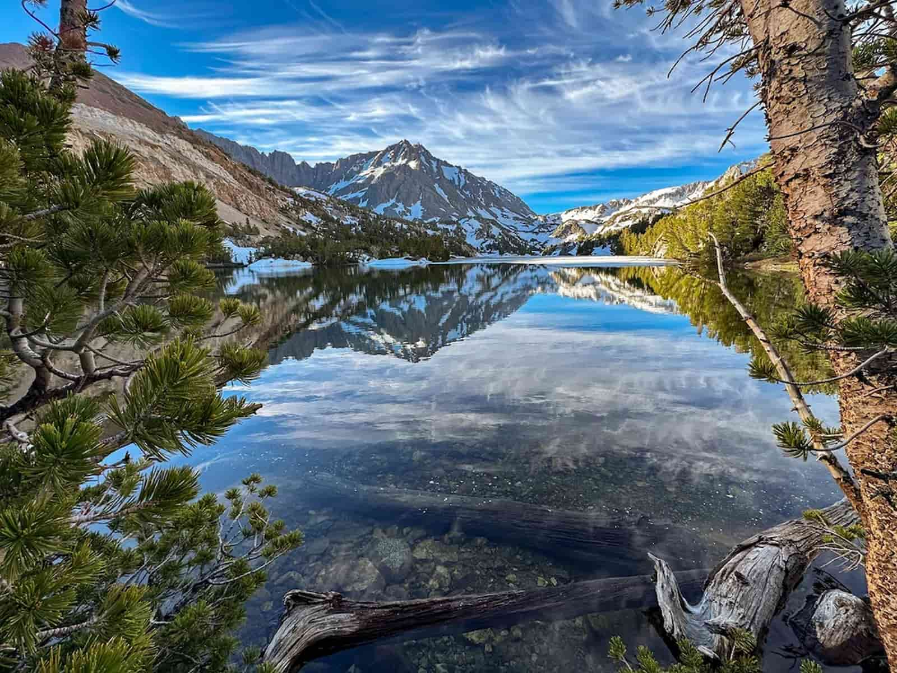

California's Best Trout Fishing Locations
Explore some of California's most popular lakes and rivers for trout fishing.
Find a Fishing Location
Select a region to discover a recommended trout fishing destination.
Your recommended fishing location will appear here.